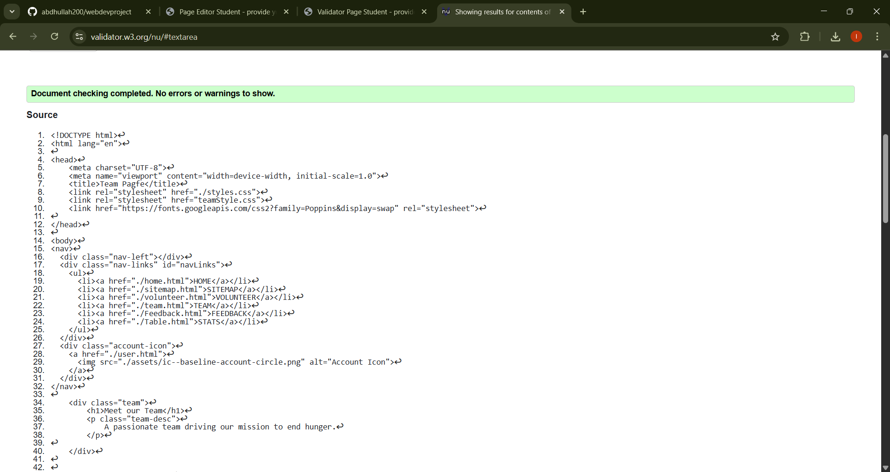
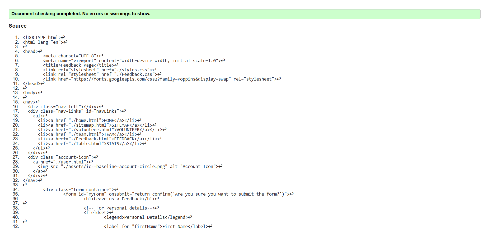
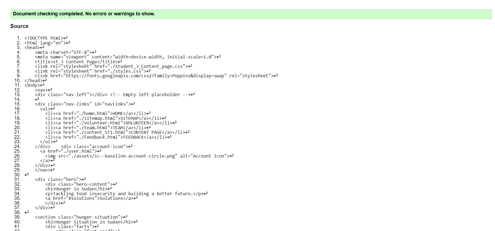

Team Page validation report
Include a short reflection on the validation report for the pages you implemented.
Back to Page Editor page
Feedback Page validation report
Include a short reflection on the validation report for the pages you implemented.
Back to Page Editor page
Content Page validation report
Include a short reflection on the validation report for the pages you implemented.
